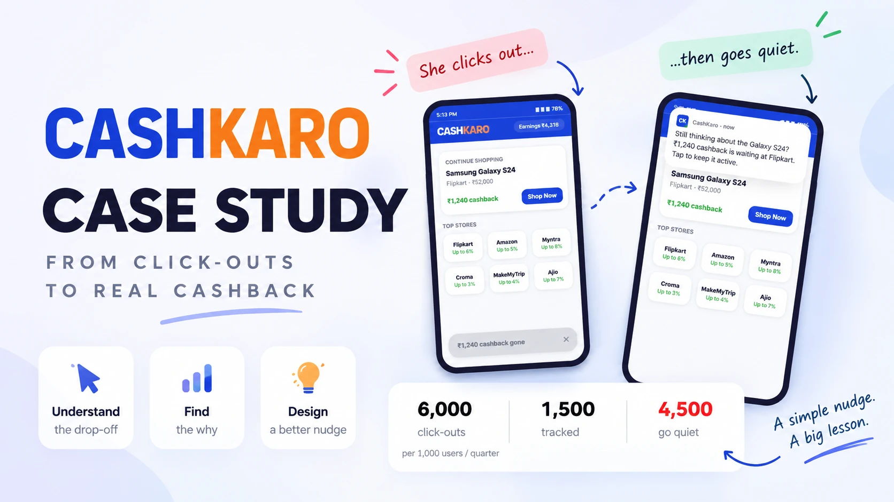

CashKaro · Case Study · Recall Engine
The brief said existing users still buy eligible purchases without going through CashKaro. The easy read is "awareness problem." The actual read, after splitting the leak into its real parts and correcting an earlier draft's inflated math, is a timing problem with a much smaller, much more honest fix.
The Problem
Existing users do not have an awareness problem. They have a timing problem. CashKaro is a coupon in a drawer at home — you know it's there, but by the time you're on the retailer's checkout page, you've forgotten the drawer. You pay. The cashback never happens.

Two different diseases, only one is ours to cure. "I have never heard of CashKaro" is an awareness problem and belongs to marketing. "I know CashKaro, I just didn't think of it while buying" is a timing problem — and that second one is what this case study is about.
But a missed purchase is one of three things, not two. Splitting it into "orders CashKaro saw" versus "orders it lost" is incomplete, and the incompleteness is the most important thing here: the lost journeys hold two populations that look identical in the data and need opposite treatment.
The recoverable case
User clicked out and did not buy — distracted, still comparing, waiting for a sale. A memory problem, and a well-timed nudge genuinely recovers this order.
The dangerous case
User clicked out, bought, and the tracking failed — a retailer app killed the cookie, an extension overwrote the affiliate code, an adblocker stripped the parameters, or a later link took last-click. This user already paid. A nudge telling them to "complete your purchase" tells a paying customer their cashback failed.
Why this matters more than it looks. For a cashback brand, wrongly implying a customer's money didn't track is the most expensive message you can send — it attacks the one thing the product is for. The size of the "already paid" group isn't an edge case for careful copy to absorb. It's a gating variable that decides whether the feature should ship at all, and nobody currently knows it.
The Evidence, and What the Math Actually Says
Not every data point deserves the same trust. Ranking the evidence first, before building any model on top of it, is what keeps the forecast honest.
Existing users, including people who have transacted before, still make eligible purchases without going through CashKaro. This is the problem speaking for itself, not a proxy for it.
Click-outs happen; a fraction never becomes a tracked order. The size of that fraction, and its split between "still deciding" and "tracking broke," is unknown — measuring it is the entire point of the first rollout phase.
Used as loose colour only, not as support: published averages don't disclose device or geography caveats, and cart abandonment is the wrong construct — it measures "added to cart, didn't buy," while the real leak measures "clicked out, no order tracked," which also includes purchases that did happen.
An earlier draft carried several assumption ranges treated as independent. They weren't: baseline orders, click-out volume and conversion rate are related by one identity, so only two of those numbers are actually free to move — and the draft's stated ranges for them were not mutually consistent with each other.
The one load-bearing number was never derived. The draft asserted the nudge-recovery rate outright, with no derivation, and that single unsupported number carried the entire business case. It can instead be built bottom-up: recovery rate = (nudge click-through rate) × (tap-to-tracked-order rate), using real push-notification benchmarks for both terms rather than a guess. The rebuilt range sits far below what the draft assumed.
The Honest Forecast
The draft's headline lift was computed as if every stalled click-out were genuinely recoverable. It isn't. A third variable — the share of stalls that are truly "still deciding" rather than "tracking broke" — has to sit inside the formula, not outside it.
This doesn't kill the idea. It states it correctly: Recall Engine is a cheap, well-targeted experiment with a modest expected return and a real chance of failing its own kill-line in most tested scenarios. That's exactly the profile that deserves a measured test before anything larger gets funded — and it's a stronger case than the draft's, because it survives contact with the benchmarks instead of avoiding them.
Recall Engine
Priya researches for days, buys a handful of big-ticket things a quarter, and already knows CashKaro. She just never remembers it at the moment she pays. The engine remembers for her, and the last screen does the real work: a confirmed cashback amount, tracked.
Remind
Fired only after a fixed minimum delay tied to how long the retailer could plausibly take to report the order — never before that window closes, category-tuned after it.
Re-arm
The tap re-opens attribution rather than just showing a message, since some retailers' windows only extend if the item is re-touched inside them.
Defend
A creator's affiliate link tapped while researching currently takes last-click by default; the re-tap puts CashKaro back in line before checkout.
The rule that protects paying customers. Never claim "no order" before the retailer could possibly have reported one. And the copy never asserts a negative: "Still deciding? Your cashback is waiting" for the recoverable case, and, separately, "Already bought? Your cashback may still be tracking, check here" for the already-paid case. The product never tells a customer their money is gone, because it can't actually know that.
Capped at two nudges a week, biased toward the largest stalled journey, since a researcher comparing three retailers for one purchase generates three click-outs, not three separate reasons to be nudged.
Measurement & Rollout
North Star: incremental tracked orders per existing user per quarter, nudged minus a held-out control. Nothing else counts as success on its own.
Leading indicators
Guardrails
| Stage | What happens | Why |
|---|---|---|
| First cohort | Push allowed only to users with a proven stalled click-out in a qualifying category. | Proven intent, reachable channel, exactly the behaviour being nudged. |
| Safety window | A short observation period before scaling. | Safety only: opt-outs, complaints, mistimed nudges, and the first read on the already-paid share. |
| Powered test | A held-out control for one full quarter. | First stage with real statistical power on the North Star. |
| Scale / Iterate / Kill | Decided by the North Star result against a pre-set bar. | Kill if lift stays near zero after a full quarter, or if opt-outs and complaints spike, or if the already-paid share turns out to dominate the stalled group. |
Where AI sits: nowhere in this loop, on purpose. Triggers, the reporting-lag floor, category delays, caps and copy are all deterministic rules — cheaper, testable, and auditable when a nudge misfires at a paying customer. Machine learning earns a place later, predicting per-user send time once real volume exists. An LLM adds nothing inside this loop today.
The Layer Above: Channels, Bots, and Who's Actually Reachable
I had been calling everyone who never opened CashKaro "invisible." That's too pessimistic, and tagging inbound traffic properly is what exposes the error — it splits one lumped-together group into two very different ones.
No visit, no tag, no row. Genuinely invisible, and genuinely unreachable by anything built into the product. That's a marketing-budget question, not a product one.
Visible and reachable, and never once looked at. The fix isn't the Recall Engine — there's no click-out to react to. It's a nudge at a different moment: on exit, or at the start of the next session.
Reachable. Recall Engine, as specced above.
Reachable, but never nudge toward "complete your purchase." Attribution repair and helping them find their missing cashback instead.
Every number in this analysis is divided by click-out volume. If a meaningful share of what's counted as click-outs are actually scrapers, crawlers or automated coupon tools, the denominator is inflated, the conversion rate looks worse than it is, and the opportunity looks bigger than it is. A coupon-and-cashback property is exactly the kind of site that attracts automated scraping, and nobody currently knows what that share is.
Filtering bot traffic is the cheapest item on the entire list, and it can invalidate the headline on its own. It belongs before the experiment runs, not after.
The revised order of work, once this is accounted for: filter bots first, because it's free and it can kill the project on its own. Then study the "visited, never clicked out" group, since it's already visible and already reachable and has never been examined. Then run the Recall Engine experiment on the recoverable group. Then size the truly invisible group with a consented panel. Recall Engine is still worth building — it just moved from first in line to third, and it got there by arithmetic rather than by preference.